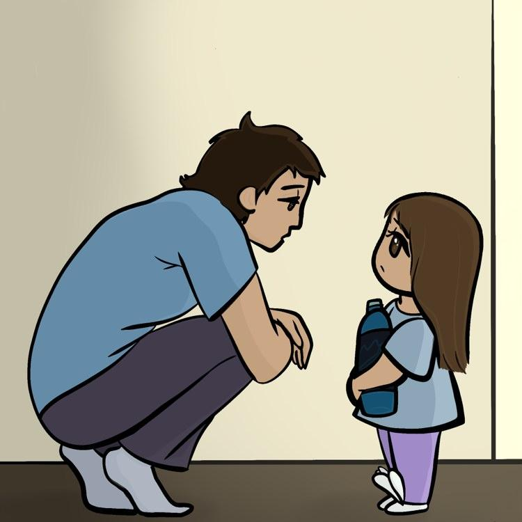

It's You & Me
Description of the Project
It's You & Me includes digital stories that allow you to pick your own story path that focuses on how our actions and words have an impact on others. The purpose of these stories is to bring awareness and reflection on how much power words hold and how we can use that to our advantage to help boost up others as well as ourselves. Learning to be mindful of what we say to ourselves and each other is beneficial to our mental health and can help create a better environment for yourself and those surrounding you.

Materials
Materials used to create this project include:
- Twine
- GitHub
- Procreate
- Code editor
- HTML & CSS code
- Writing
Inspiration
For this particular project, I was first inspired seeing how other art students were using art to express themselves from their own personal experiences. This led to me thinking about my own experiences in my life. Something else that also inspired me to create this was the realization of how common talking down to yourself and others in American culture is. Whether it is serious or as a joke, these negative comments were there and it doesn’t sit well with me. Therefore, I wanted to create something that would hopefully allow people to reflect on their actions and words.
Project Process
The process for this project took a while to put together, as I was unsure of how I wanted to have it presented. I played around with different ideas, such as using illustrations, poetry, or a game. My character design also changed a few times, until I decided to add a secondary character. The final result being a digital story with digital illustrations and animation.
My Experience
Being able to experience creating a group art exhibition was satisfying. Although I had 3 months to create this project myself, there was comfort in knowing that I was not the only one going through this experience alone, and that I could rely on others for artistic criticism. I have participated in other art exhibitions, however, they were not as big as presenting in the black box Hammer Theater. Byte Me was also by far the most digital exhibition I have participated in and there were no technical challenges on my end which I am very thankful for.
